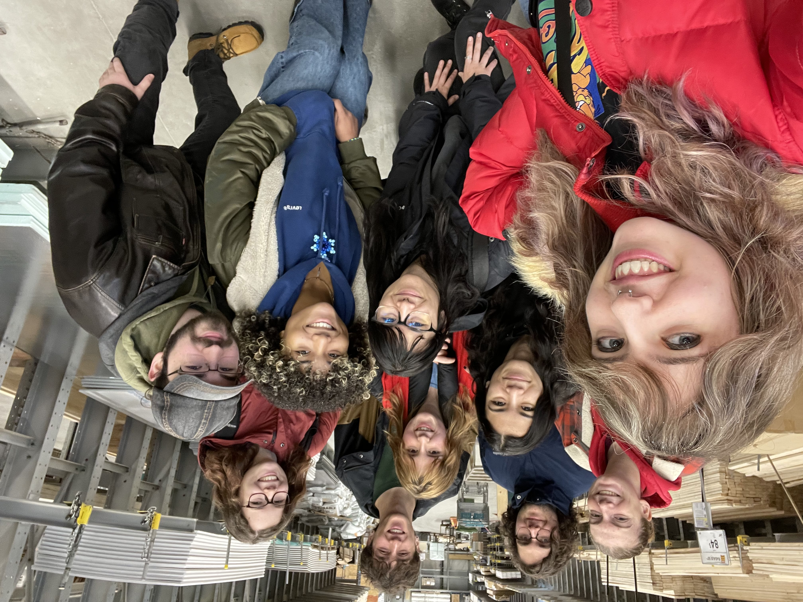

Like all major construction, the kiosk building started with a brainstorming phase. With a theme as expansive as Minecraft is, there were many things that were thought possible to add to the kiosk, while only a few ideas could be chosen to actually be implemented. An overarching theme of the kiosk being a house made of wooden planks was quickly decided upon, with walls chosen to be built on three sides excluding the front almost immediately. It was also decided that a crafting table would be built in the middle of the kiosk for the robot team to use for repairs and storage.
When the winter break began and the team received access to the Agora, a large open area in the college, work on the kiosk began. The key focus of the work during the winter break was on building and starting the painting of all of the surrounding walls, as the walls that make up the kiosk are the most essential element of it. Due to the fact that many members were either on vacation or could not come to the college on a daily basis, construction went a little slower than anticipated, as while every wall was able to be constructed individually, only the background layer of paint was able to be applied. This problem was somewhat helped with the use of free food as an incentive for members to show up more often, leading to many more people appearing near the end of the break, and progress speeding up, especially with the stencil and beginning of painting the individual pixels of the wall.
From the beginning of the winter semester to the end of March break, most of the work done on the kiosk continued to be the painting of the walls. Many members once again were unable to come frequently on March break, leading to progress slowing more than anticipated, especially with many kiosk members leaving to help film and act in the produced video for a couple days. However, regardless of the adversity, the vast majority of the wall painting was finished by the end of March break, and the construction of the crafting table had already begun.